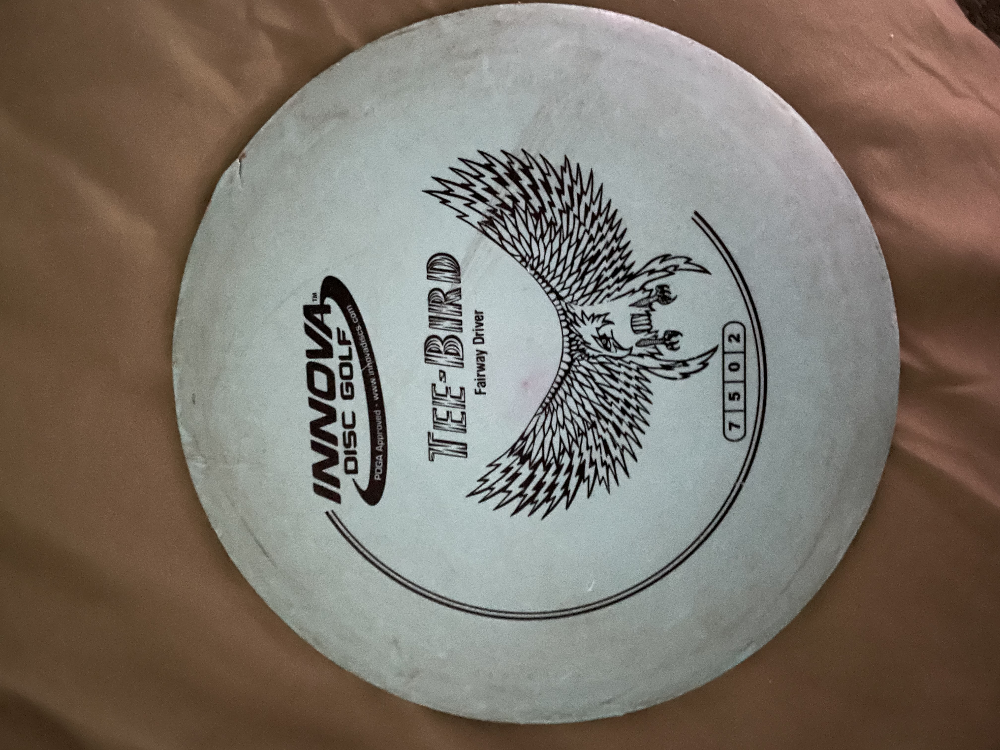
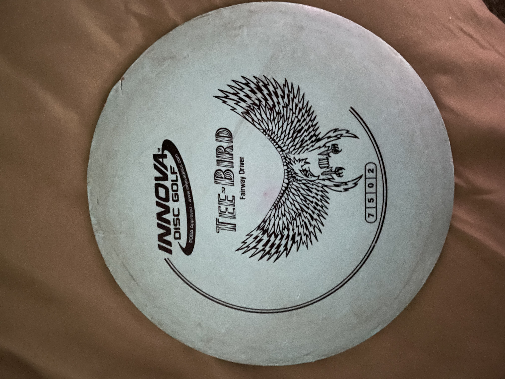

The goal of disc golf is to get the disc in the basket in a certain number of throws or strokes. Each throw adds one stroke to your score. For example if a hole is par 3 then you would need to get the disc in the basket in 3 throws or less in order for your score to not get worse. Each disc has four numbers on it to show its stats. From left to right they are:
- Speed
- Glide
- Turn
- Fade
Speed is how fast the disc can travel and how easily it can cut through the air.
Glide is the ability of the disc to maintain height during flight.
Turn is the tendency of the disc to bank right at the start of flight. Usually this number is close to zero or negative.
Fade is the tendency of the disc to hook left at the end of flight.
There are typically three kinds of discs used: a driver, a mid-range, and a putter.
Drivers usually have higher speed and glide for a far first throw, with low turn and fade for a straight shot.
Mid-ranges usually have a medium speed and glide, but sometimes have higher turn and fade than drivers.
Putters are usually just tanks with all stats close to zero for a short, but reliable shot.